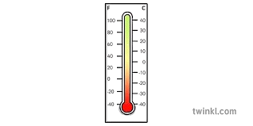
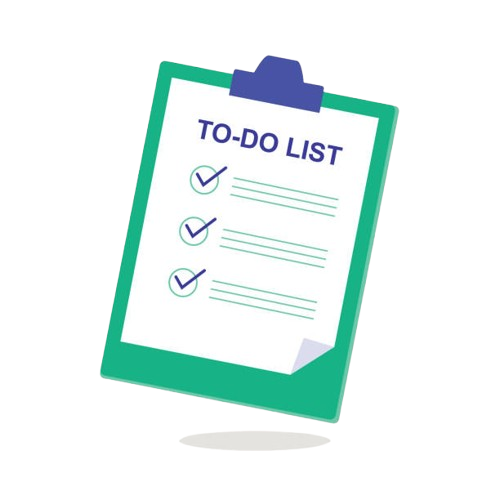

Aspiring Frontend Web and Machine Learning Engineer with foundational skills in UI development and machine learning, seeking to apply problem-solving abilities to real-world applications.
I did my secondary School from Vani Vidya School. I scored 90.6% marks. I completed my secondary school in 2019.
I did my high school from Karim City College in science stream. I scored 67% marks. I was started in 2019 and completed in 2021.
I did my Diploma in ECE from Government Polytechnic College, Ranchi. But I did not complete it and proceeded to complete a B.Tech degree. I scored 79% marks in first semester.
I'm learning SPENISH LANGUAGE from ACCENTURE to explore myself. I currently complete my B1 level.
I'm doing BTECH from NARULA INSTITUTE OF TECHNOLOGY to CSE with AIML specialization. My current CGPA 8.16 . I started My college in 2022 and will complete on 2026.
I build machine learning models using Python for prediction and analysis. I work on data preprocessing, feature engineering, and model training. I evaluate models using standard performance metrics. I integrate ML solutions into real-world applications.
I create lots of website or web pages basics to advance. In basic i created to-do-list and temprater convertor and more, In advence I created weather Webapp using restAPI and more.
This Language is help me a lot because i can create a webpages in spanish Language as well and I can attract Spain Users on my website.
A web-based tool that allows users to convert amounts between different currencies with real-time exchange rates. Users can select the source and target currencies, enter an amount, and instantly see the converted value along with country flags. Built with HTML, CSS, and JavaScript, it uses an API to fetch live exchange rates and features a clean, interactive UI with a currency swap option.

A web-based tool that converts temperatures between Celsius, Fahrenheit, and Kelvin. Users can input a value, select the source and target units, and instantly see the converted result. Built with HTML, CSS, and JavaScript, it features a clean, responsive interface and validates user input for accurate conversions.
A ML-based tool that Shows quality of the Wine_Quality.In User-InterFace(UI) Users can input a All the required value for the testing.According to my Machine Learning model It predict my Wine is good or not. Built with Streamlit, it features a clean, responsive interface and validates user input for accurate Result.

A web-based productivity tool that allows users to add, edit, delete, and mark tasks as completed. It features a dynamic progress bar showing task completion, interactive checkboxes, and a congratulatory confetti animation when all tasks are done. Built using HTML, CSS, and JavaScript.This project helps manage tasks efficiently while providing a visually engaging user experience.
A web-based tool that My own game created. Users can play with the System the Stone, paper and sessior game. where user input there choice according and System randomly choice one option among three.and according to algorithum the winner will decide. Built with HTML, CSS, and JavaScript, it features a clean, responsive interface and validates user interface.
A ML-based tool that play the song according to there emotion.In User-InterFace(UI) Users can input a All the required field such as Name of singer and language of music and your emotion detect.According to my Machine Learning,OpenCV and CNN model It predict the emotion and according to singer and language song will play. Built with Streamlit, it features a clean, responsive interface and validates user input for accurate Result.